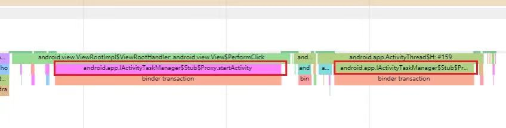

am trace-ipc 分析
一、使用¶
官网介绍¶
如果您有 binder 事务，则可以使用以下 adb 命令捕获其调用堆栈：
$ adb shell am trace-ipc start
… use the app - scroll/animate ...
$ adb shell am trace-ipc stop --dump-file /data/local/tmp/ipc-trace.txt
$ adb pull /data/local/tmp/ipc-trace.txt
命令提示¶
:/ # am
Activity manager (activity) commands:
trace-ipc [start|stop] [--dump-file <FILE>]
Trace IPC transactions.
start: start tracing IPC transactions.
stop: stop tracing IPC transactions and dump the results to file.
--dump-file <FILE>: Specify the file the trace should be dumped to.
小结¶
1、抓所有进程的java层面的binder调用栈，只抓发起端的线程栈，也就是堆栈的最上一句总是
2、抓的是一段时间start↔stop，没有类似logcat的缓存
3、主要用于在java层面上
- 确认谁（进程）调用了某个binder服务
- 确认操作过程中发生了哪些ipc动作
需要注意的是，此处局限于java层，局限于ipc。
-
如果你的目的是确认最全面（进程内+进程外）的代码流程，则还需要cpu-profiler工具来抓进程内的流程。或者是traceview与Simpleperf。
-
如果你想确认最全面的ipc流程，目前native的ipc记录工具还有待发掘。
下面分析源码实现。
二、源码分析¶
代码基于android11。am命令的实现见debug：am、cmd命令
书接上文，
ActivityManagerShellCommand#onCommand¶
frameworks/base/services/core/java/com/android/server/am/ActivityManagerShellCommand
176 @Override
177 public int onCommand(String cmd) {
183 switch (cmd) {
184 case "start":
185 case "start-activity":
186 return runStartActivity(pw);
......
203 case "trace-ipc":
204 return runTraceIpc(pw);
......
走到204行
ActivityManagerShellCommand#runTraceIpc¶
frameworks/base/services/core/java/com/android/server/am/ActivityManagerShellCommand
754 int runTraceIpc(PrintWriter pw) throws RemoteException {
755 String op = getNextArgRequired();
756 if (op.equals("start")) {
757 return runTraceIpcStart(pw);
758 } else if (op.equals("stop")) {
759 return runTraceIpcStop(pw);
760 } else {
761 getErrPrintWriter().println("Error: unknown trace ipc command '" + op + "'");
757行start，759行stop。先看start
am trace-ipc start¶
ActivityManagerShellCommand#runTraceIpcStart¶
frameworks/base/services/core/java/com/android/server/am/ActivityManagerShellCommand
168 ActivityManagerShellCommand(ActivityManagerService service, boolean dumping) {
169 mInterface = service;
----------------------------------------------------------------------------------
766 int runTraceIpcStart(PrintWriter pw) throws RemoteException {
767 pw.println("Starting IPC tracing.");
768 pw.flush();
769 mInterface.startBinderTracking();
770 return 0;
771 }
769行，mInterface是ams，见构造函数169行。继续跟
ActivityManagerService.java#startBinderTracking¶
frameworks/base/services/core/java/com/android/server/am/ActivityManagerService.java
18843 public boolean startBinderTracking() throws RemoteException {
18844 synchronized (this) {
18845 mBinderTransactionTrackingEnabled = true;
18846 // TODO: hijacking SET_ACTIVITY_WATCHER, but should be changed to its own
18847 // permission (same as profileControl).
18848 if (checkCallingPermission(android.Manifest.permission.SET_ACTIVITY_WATCHER)
18849 != PackageManager.PERMISSION_GRANTED) {
18850 throw new SecurityException("Requires permission "
18851 + android.Manifest.permission.SET_ACTIVITY_WATCHER);
18852 }
18853
18854 for (int i = 0; i < mProcessList.mLruProcesses.size(); i++) {
18855 ProcessRecord process = mProcessList.mLruProcesses.get(i);
18856 if (!processSanityChecksLocked(process)) {
18857 continue;
18858 }
18859 try {
18860 process.thread.startBinderTracking();
18861 } catch (RemoteException e) {
18848-18852鉴权。
18854行for循环，将系统的java进程都开启binderTracking，重点就是18860行。
下面进入java进程的ActivityThread中跟踪
ActivityThread.java$ApplicationThread#startBinderTracking¶
frameworks/base/core/java/android/app/ActivityThread.java
947 private class ApplicationThread extends IApplicationThread.Stub {
1688 @Override
1689 public void startBinderTracking() {
1690 sendMessage(H.START_BINDER_TRACKING, null);
1691 }
--------------------------------------------------------------------------
1803 class H extends Handler {
1907 public void handleMessage(Message msg) {
2042 case START_BINDER_TRACKING:
2043 handleStartBinderTracking();
2044 break;
--------------------------------------------------------------------------
3842 private void handleStartBinderTracking() {
3843 Binder.enableTracing();
3844 }
Binder.java#enableTracing¶
frameworks/base/core/java/android/os/Binder.java
138 /**
139 * Enable Binder IPC tracing.
140 *
141 * @hide
142 */
143 public static void enableTracing() {
144 sTracingEnabled = true;
145 }
-------------------------------------------------------------------
161 public static boolean isTracingEnabled() {
162 return sTracingEnabled;
163 }
144行，将标志位置true。作用是在每次java世界发起binder调用的时候，来通过这个参数判断是否要抓trace。
BinderProxy.java#transact¶
frameworks/base/core/java/android/os/BinderProxy.java
495 public boolean transact(int code, Parcel data, Parcel reply, int flags) throws RemoteException {
517 final boolean tracingEnabled = Binder.isTracingEnabled();
518 if (tracingEnabled) {
519 final Throwable tr = new Throwable();
520 Binder.getTransactionTracker().addTrace(tr);
521 StackTraceElement stackTraceElement = tr.getStackTrace()[1];
522 Trace.traceBegin(Trace.TRACE_TAG_ALWAYS,
523 stackTraceElement.getClassName() + "." + stackTraceElement.getMethodName());
524 }
526 // Make sure the listener won't change while processing a transaction.
527 final Binder.ProxyTransactListener transactListener = sTransactListener;
530 if (transactListener != null) {
531 final int origWorkSourceUid = Binder.getCallingWorkSourceUid();
532 session = transactListener.onTransactStarted(this, code, flags);
540 }
549 try {
550 return transactNative(code, data, reply, flags);
551 } finally {
554 if (transactListener != null) {
555 transactListener.onTransactEnded(session);
556 }
558 if (tracingEnabled) {
559 Trace.traceEnd(Trace.TRACE_TAG_ALWAYS);
519、520行抓调用栈放到TransactionTracker里存放
522和559是抓systrace，抓出来类似长这样，有详细的类名方法名：
